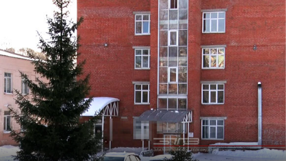
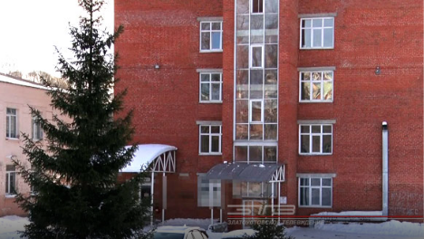

Госпитальная база закрыта, учреждение вернётся в «доковидный» режим после дезинфекции. Роддом Златоуста вновь откроет свои двери 8 февраля
Ещё одна главная новость дня — с 8 февраля златоустовский роддом возвращается к привычному формату работы. Госпитальную базу для лечения больных коронавирусной инфекцией переводят...

 
